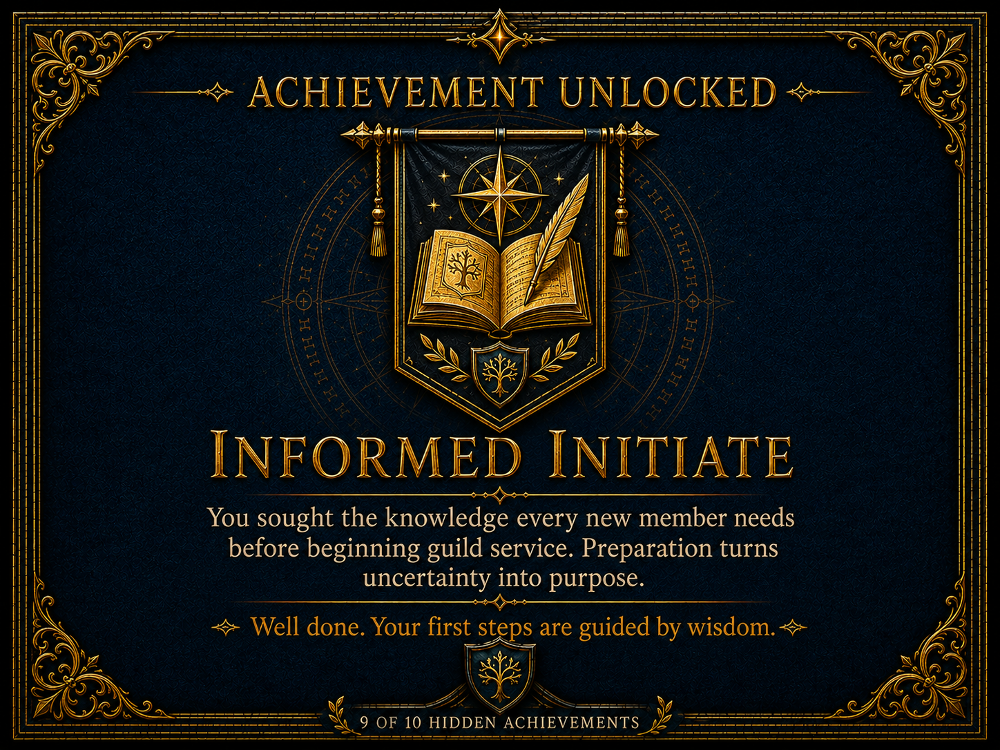
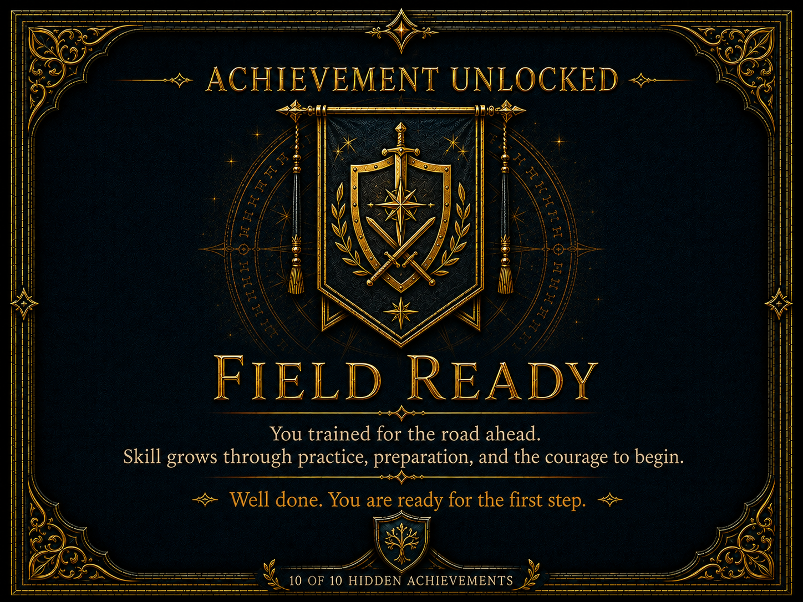

News & Announcements
Stay informed about important guild announcements, upcoming expeditions, training opportunities, celebrations, and other events taking place throughout the Adventurer's Guild.
Featured Announcement
Guild Expands Contract Operations Across the Realm
The Adventurer's Guild has opened several new contract offices to better serve communities beyond the major cities. Members will soon have access to additional quests, local resources, and regional support throughout the realm.
Latest Announcements
Guild Announcement
New Member Orientation Scheduled
New Bronze Rank members are invited to attend an orientation covering guild rules, contracts, ranks, available resources, and reporting procedures.
Policy Update
Revised Quest Reporting Guidelines
Members should now submit completed quest reports within three days of returning to a guildhall. Reports should include discoveries, dangers, and final outcomes.
Member Notice
Equipment Inspection Week
Guild armorers and quartermasters will provide free inspections of weapons, armor, packs, and expedition supplies throughout the coming week.
Upcoming Expeditions
Exploration
Survey of Moonwatch Ruins
Guild historians are organizing an expedition to record the remaining structures and inscriptions found within the ruins of Moonwatch Tower.
Escort Mission
Northern Trade Road Escort
Qualified members are needed to escort merchants and supply wagons along the northern trade road following several recent attacks.
Mapping Expedition
Cartographers Needed for Hollow Creek
The guild is seeking adventurers with navigation or mapping experience to document newly discovered trails near Hollow Creek.
Guild Events
Community Event
Summer Guildhall Gathering
Guild members, staff, and local residents are invited to attend an evening gathering featuring food, music, games, and stories from recent adventures.
Training
Bronze Rank Training Day
New adventurers can practice basic combat, navigation, teamwork, first aid, and quest-reporting skills under the supervision of senior guild members.
Charity Event
Healers' Supply Drive
The guild is collecting medicine, bandages, herbs, and other supplies for healers serving remote communities throughout the region.

